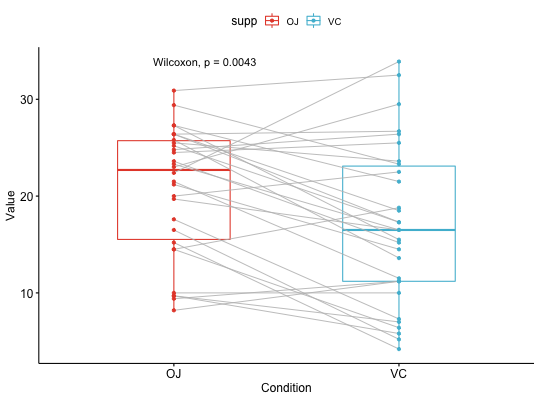
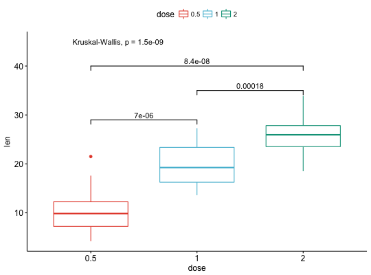
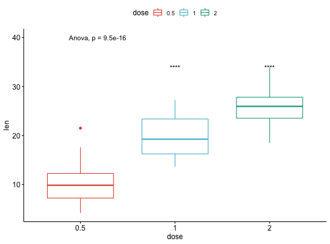
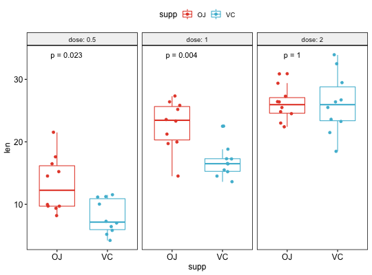

Add Mean Comparison P-values to a ggplot
Add mean comprison p-values to a ggplot, such as box blots, dot plots and stripcharts.
stat_compare_means(mapping = NULL, data = NULL, method = NULL, paired = FALSE, ref.group = NULL, comparisons = NULL, hide.ns = FALSE, label.sep = ", ", label = NULL, label.x.npc = "left", label.y.npc = "top", label.x = NULL, label.y = NULL, geom = "text", position = "identity", na.rm = FALSE, show.legend = NA, inherit.aes = TRUE, ...)
Arguments
- mapping
- Set of aesthetic mappings created by
aesoraes_. If specified andinherit.aes = TRUE(the default), it is combined with the default mapping at the top level of the plot. You must supplymappingif there is no plot mapping. - data
- The data to be displayed in this layer. There are three
options:
If
NULL, the default, the data is inherited from the plot data as specified in the call toggplot. Adata.frame, or other object, will override the plot data. All objects will be fortified to produce a data frame. Seefortifyfor which variables will be created. Afunctionwill be called with a single argument, the plot data. The return value must be adata.frame., and will be used as the layer data. - method
- a character string indicating which method to be used for comparing means.
- paired
- a logical indicating whether you want a paired test. Used only
in
t.testand in wilcox.test. - ref.group
- a character string specifying the reference group. If
specified, for a given grouping variable, each of the group levels will be
compared to the reference group (i.e. control group).
ref.groupcan be also".all.". In this case, each of the grouping variable levels is compared to all (i.e. basemean). - comparisons
- A list of length-2 vectors. The entries in the vector are either the names of 2 values on the x-axis or the 2 integers that correspond to the index of the groups of interest, to be compared.
- hide.ns
- logical value. If TRUE, hide ns symbol when displaying significance levels.
- label.sep
- a character string to separate the terms. Default is ", ", to separate the correlation coefficient and the p.value.
- label
- character string specifying label type. Allowed values include "p.signif", "p.format".
- label.x.npc, label.y.npc
- can be
numericorcharactervector of the same length as the number of groups and/or panels. If too short they will be recycled.- If
numeric, value should be between 0 and 1. Coordinates to be used for positioning the label, expressed in "normalized parent coordinates". - If
character, allowed values include: i) one of c('right', 'left', 'center', 'centre', 'middle') for x-axis; ii) and one of c( 'bottom', 'top', 'center', 'centre', 'middle') for y-axis.
- If
- label.x, label.y
numericCoordinates (in data units) to be used for absolute positioning of the label. If too short they will be recycled.- geom
- The geometric object to use display the data
- position
- Position adjustment, either as a string, or the result of a call to a position adjustment function.
- na.rm
- If FALSE (the default), removes missing values with a warning. If TRUE silently removes missing values.
- show.legend
- logical. Should this layer be included in the legends?
NA, the default, includes if any aesthetics are mapped.FALSEnever includes, andTRUEalways includes. - inherit.aes
- If
FALSE, overrides the default aesthetics, rather than combining with them. This is most useful for helper functions that define both data and aesthetics and shouldn't inherit behaviour from the default plot specification, e.g.borders. - ...
- other arguments to pass to
geom_textorgeom_label.
See also
Examples
# Load data data("ToothGrowth") head(ToothGrowth)#> len supp dose #> 1 4.2 VC 0.5 #> 2 11.5 VC 0.5 #> 3 7.3 VC 0.5 #> 4 5.8 VC 0.5 #> 5 6.4 VC 0.5 #> 6 10.0 VC 0.5# Two independent groups #::::::::::::::::::::::::::::::::::::::::::::::::: p <- ggboxplot(ToothGrowth, x = "supp", y = "len", color = "supp", palette = "npg", add = "jitter") # Add p-value p + stat_compare_means()# Change method p + stat_compare_means(method = "t.test")# Paired samples #::::::::::::::::::::::::::::::::::::::::::::::::: ggpaired(ToothGrowth, x = "supp", y = "len", color = "supp", line.color = "gray", line.size = 0.4, palette = "npg")+ stat_compare_means(paired = TRUE)# More than two groups #::::::::::::::::::::::::::::::::::::::::::::::::: # Pairwise comparisons: Specify the comparisons you want my_comparisons <- list( c("0.5", "1"), c("1", "2"), c("0.5", "2") ) ggboxplot(ToothGrowth, x = "dose", y = "len", color = "dose", palette = "npg")+ # Add pairwise comparisons p-value stat_compare_means(comparisons = my_comparisons, label.y = c(29, 35, 40))+ stat_compare_means(label.y = 45) # Add global Anova p-value# Multiple pairwise test against a reference group ggboxplot(ToothGrowth, x = "dose", y = "len", color = "dose", palette = "npg")+ stat_compare_means(method = "anova", label.y = 40)+ # Add global p-value stat_compare_means(aes(label = ..p.signif..), method = "t.test", ref.group = "0.5")# Multiple grouping variables #::::::::::::::::::::::::::::::::::::::::::::::::: # Box plot facetted by "dose" p <- ggboxplot(ToothGrowth, x = "supp", y = "len", color = "supp", palette = "npg", add = "jitter", facet.by = "dose", short.panel.labs = FALSE) # Use only p.format as label. Remove method name. p + stat_compare_means( aes(label = paste0("p = ", ..p.format..)) )